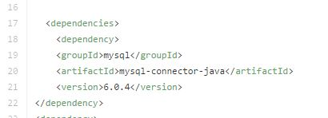
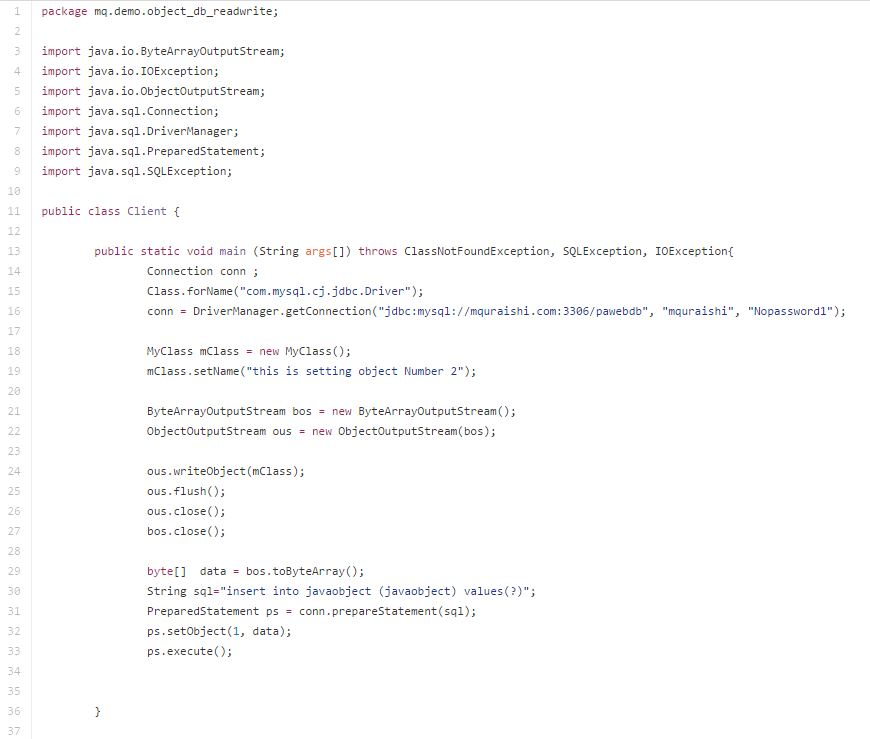

Read & Write Java Object to Database (MySQL)
In order to write Java-Object to database , you need to have a column which type is longblob And you need the following Objects :
- Connection Object from java.sql package
- ByteArrayOutputStream object from java.io package
- ObjectOutputStream object from java.io package
- PreparedStatement from java.sql package
If you want to read java-Object from database then besides Connection and PreparedStatement Object you need ByteArrayInputStream & ObjectInputStream from java.io package
First Step: Create a Table named "javaObject" which has only two columns. 1st Column is "id" Auto Increment, 2nd columns is "javaObject" and type will be longblob
===========================================================
create table javaobject (id int(10) auto_increment , javaobject longblob , primary key (id))
===========================================================
After creating the above table , create a maven java project and add the following dependency in your POM file.

Thats all you need to get started.
Lets take a look at the Client class where we will write an Object of MyClass. Before that Ofcourse you need to create a class named MyClass and there will be 2 properties. Number 1 will be Long Id and String name and generate Setter and Getter Methods. Now in your main class where you will write the object to database is as follows:

In the above example we can see that After Creating Connection and MyClass object we created ByteArrayOutputStream and ObjectOutputStream. Using ObjectOutPutStream we write the object to ByteArrayOutputStream. So all the information of the object exists in ByteArrayOutputStream object. Now Convert the ByteArrayOutputStream object to byte array. We created the PreparedStatement using Connection Object and send the sql query.
sql = "inser into tableName (columntName) values(?)"
PreparedStatement as a method called setObject where i can send the byte array data and call execute.
Thats all. If you check your database you will be able to see that one entry has been entered.
For reading data take a look at my Client2 class.